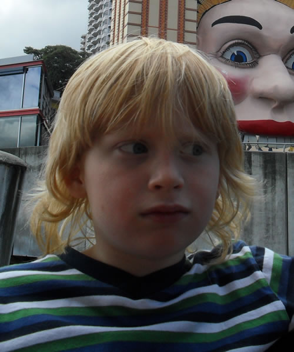

These pictures have object-fit: none; applied to them, which causes the images to ignore the constraints of the <img> tag and spill out at their original size. Here we've hidden the parts of the image that fall outside with overflow: hidden;. We've also used object-position: center; to make the image display from the center rather than the top left.We've then applied a transition to the images so that when they are hovered or focused, they grow in size. The object-fit: none;/overflow: hidden; effect alters as the image grows, creating an interesting preview effect.
object-fit: fill;
object-fit: fill; forces the content of the replaced element to adopt the aspect ratio of the element itself, even if it would not normally do so, eg with videos. This first <video> element shows a video with a broken aspect ratio - not great.This second <video> element is identical to the first, except that it has object-fit: fill; applied to it - this causes the video to adopt the aspect ratio of the <video> element - much better.
object-fit: contain;
object-fit: contain; applied to a replaced element alters the longest dimension of the content so that it is the same size as its containing element's corresponding dimension. The other dimension is altered proportionately so that the content maintains its aspect ratio, and shrinks to fit inside the replaced element.So in this case, the first <img> is set to different dimensions than the original image, causing it to stretch and look horrible. the second <img> has object-fit: contain; applied, forcing its content to main aspect ratio and shrink so it fits inside.
object-fit: cover;
object-fit: cover; applied to a replaced element alters the shortest dimension of the content so that it is the same size as its containing element's corresponding dimension. The other dimension is altered proportionately so that the content maintains its aspect ratio, and the content grows to completely envelope the replaced element.So in this case, the first <img> is set to different dimensions than the original image, causing it to stretch and look horrible. the second <img> has object-fit: cover; applied, forcing its content to main aspect ratio and grow so it covers the containing element. overflow: hidden; is then used to hide the overflowing content.


{kind=link}
{kind=link}